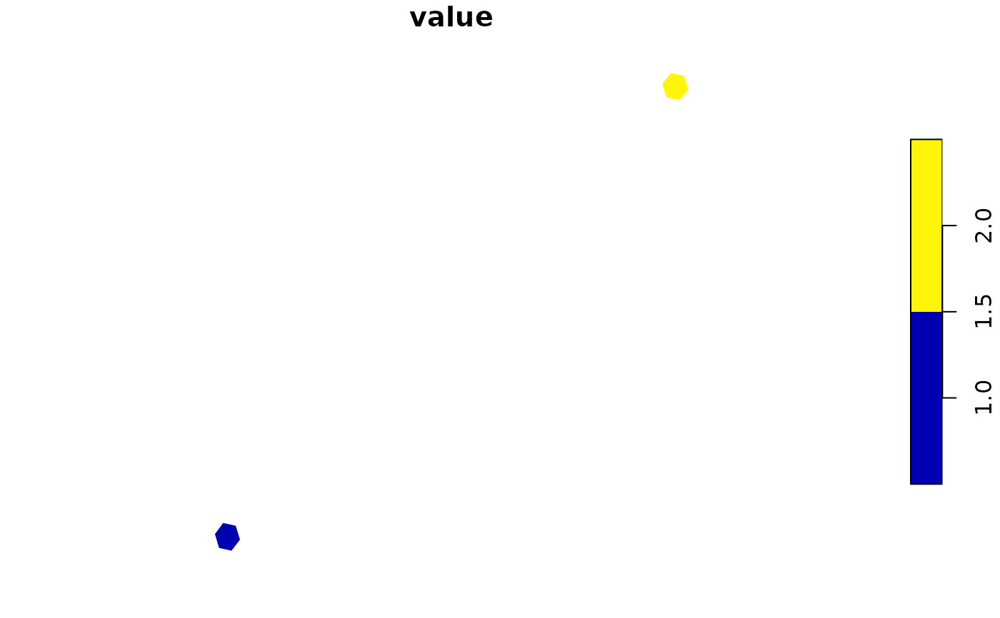

Source polygons are never constructed. The method selects a legitimate Z7
or Z3 ancestor level and aggregates source values before making any display
geometry. render = "auto" draws smaller results as vector polygons and
rasterizes larger results for a compact, device-friendly display.
Usage
# S3 method for class 'globalhex_data'
plot(
x,
y = NULL,
value = NULL,
resolution = NULL,
max_cells = 100000L,
fun = NULL,
na.rm = TRUE,
lod = TRUE,
extent = NULL,
xlim = NULL,
ylim = NULL,
device_size = NULL,
cell_pixels = 3,
crs = 4326,
border = NA,
pal = NULL,
render = c("auto", "polygon", "raster"),
raster_threshold = 20000L,
...
)Arguments
- x
A
hex_data()object.- y
Unused; present for the base
plot()generic.- value
Attribute column to plot.
NULLuses the first attribute.- resolution
Explicit display resolution.
NULLselects one automatically.- max_cells
Hard maximum number of display cells.
- fun
Aggregation function.
NULLuses type-aware defaults; usesumexplicitly for counts.- na.rm
Whether aggregation removes missing values.
- lod
Whether to use automatic hierarchical level of detail.
- extent
Geographic display extent as
c(xmin, xmax, ymin, ymax).- xlim, ylim
Optional conventional longitude and latitude limits. They override the corresponding part of
extentand participate in LOD selection before projection.- device_size
Optional display width and height in pixels.
- cell_pixels
Approximate minimum cell diameter in screen pixels.
- crs
Display CRS understood by
sf::st_crs(). Aggregation always happens before projection.- border
Polygon border passed to
plot(). Raster rendering cannot draw individual cell borders.- pal
Optional color palette function or vector.
- render
Rendering backend.
"auto"rasterizes sufficiently large displays whenterrais available,"polygon"always draws vector polygons, and"raster"always rasterizes the displayed polygons.- raster_threshold
Number of displayed cells at which automatic rendering switches to a raster. An explicit non-missing
borderkeeps automatic rendering in polygon mode.- ...
Additional arguments passed to the selected
sforterraplot method.
Value
The aggregated globalhex_data used for display, invisibly, with
plot_resolution, plot_extent, and plot_render attributes. Polygon
rendering also attaches the displayed geometry; raster rendering
attaches plot_raster_size instead.
Examples
if (requireNamespace("sf", quietly = TRUE)) {
cells <- point_to_cell(rbind(c(0, 0), c(10, 10)), 5)
plot(hex_data(cells, value = c(1, 2)), max_cells = 1000)
}
